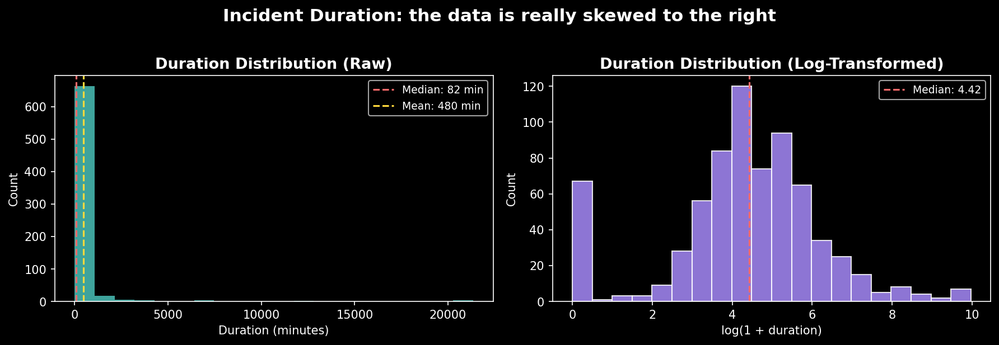
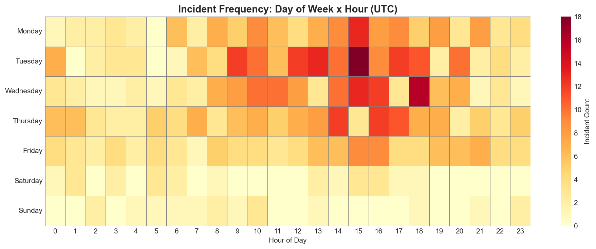
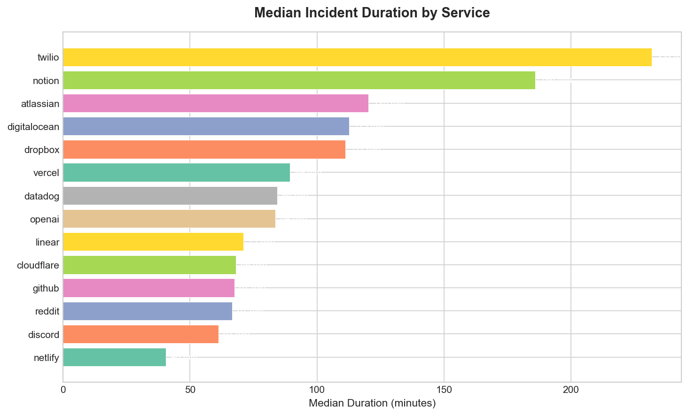
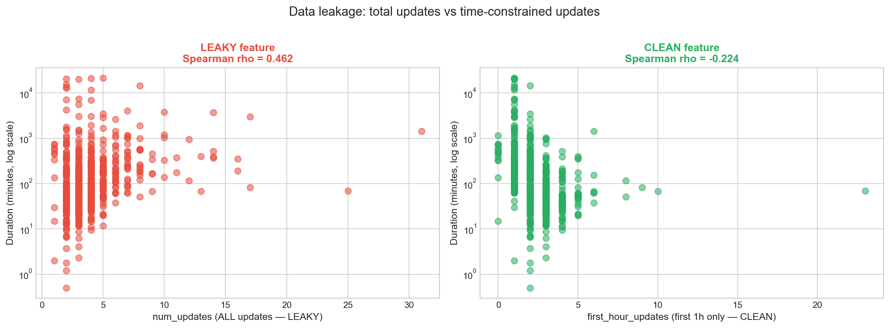
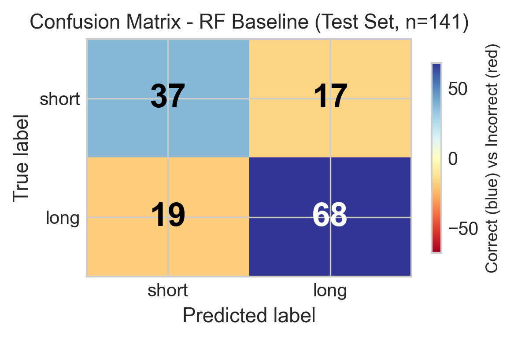
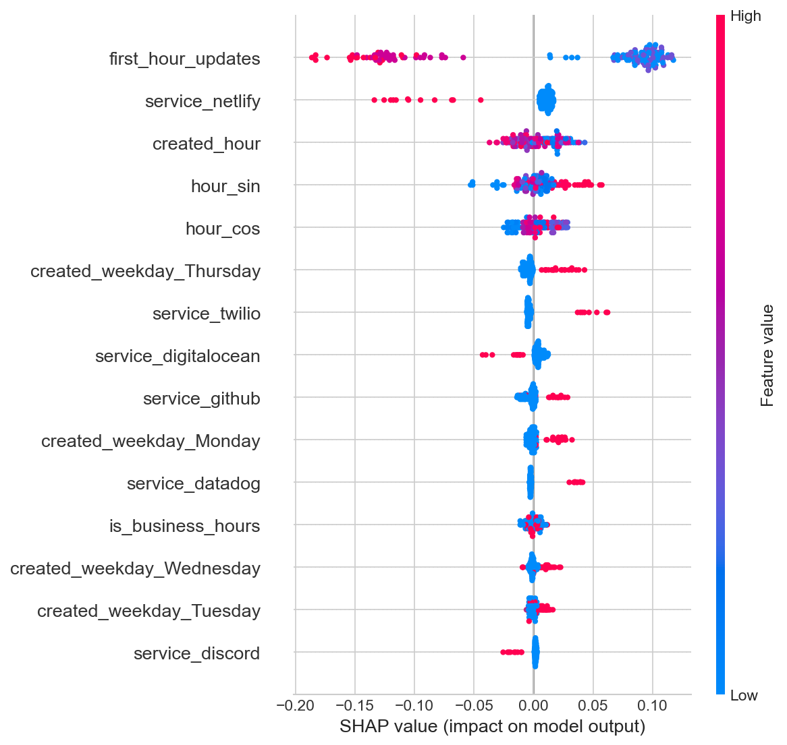

Can early signals tell us how long an outage will last?
When a cloud service goes down, the cost climbs by the minute — historically estimated in the thousands of dollars per minute for large companies. Yet most outage analysis happens after the fact, in post-mortems. The interesting question is whether the first hour already contains enough signal to triage.
Every service in this study runs a public Statuspage.io page that exposes its incident history as structured JSON — no API key, no vendor cooperation, fully reproducible. That makes a cross-service prediction problem possible from the outside.
This is deliberately a harder setting than the AIOps literature usually assumes. Systems like Microsoft's AirAlert (Chen et al., 2019) predict outage duration from internal telemetry — host alerts, deployment signals, topology graphs. Incident Genome works from the opposite vantage point: only what the public can see.
869 raw incidents, cleaned down to 704
The scraper pulls from 14 services — GitHub, Cloudflare, OpenAI, Discord, Reddit, Atlassian, Vercel, Netlify, DigitalOcean, Dropbox, Linear, Notion, Twilio, and Datadog — via two Statuspage.io endpoints per service. Cleaning dropped 5 incidents without a resolved status, 156 with missing duration, and 4 with negative duration, leaving 704 resolved incidents spanning 2019–2026.
The prediction target is mildly imbalanced: 272 short incidents versus 432 long, a 1.59:1 ratio. Duration itself is heavily right-skewed — a median of 82.5 minutes, but a mean of 480, dragged up by a tail that reaches nearly 15 days.

Outages are not evenly spread across the week. The frequency heatmap shows a clear concentration: Tuesdays, mid-afternoon UTC. Business hours (roughly 09–17 UTC) account for about half of all incidents.

And the services themselves are far from interchangeable. Median time-to-resolution varies more than 5× across the fourteen.

A correlation that flipped sign
The most instructive moment in the project was catching a data leak in its own feature set. An obvious candidate predictor was num_updates — the number of status-page updates posted during an incident. It correlated with duration at a healthy Spearman ρ of +0.46.
But that number is a trap. num_updates counts every update across the incident's entire lifecycle, including the ones posted after it was resolved. Longer incidents accumulate more updates simply by lasting longer — the feature was quietly leaking the answer.
The fix was a time-windowed replacement: first_hour_updates, counting only updates posted within the first 3600 seconds. When the correlation was recomputed on this leakage-free feature, it did not just shrink — it reversed.
The sign flip is the proof. A feature engineered without temporal awareness did not just exaggerate model performance — it inverted the scientific conclusion. impact and num_components were flagged with the same reasoning and excluded from the model.

Five honest features, two models, one rule
The rule that governs the whole pipeline: every feature must be observable within the first hour. That leaves five — service, created_hour, created_weekday, first_hour_updates, and a derived is_business_hours flag. The three leaky candidates (num_updates, impact, num_components) are explicitly excluded.
The data is split 80/20 with stratification to preserve the class ratio. Imbalance is handled with class_weight='balanced' rather than SMOTE — at 1.59:1 the imbalance is mild, and inverse-frequency weighting adjusts the loss directly without fabricating synthetic samples in a sparse categorical feature space.
Two models are compared: Logistic Regression as an interpretable linear baseline, and a Random Forest as the primary model — it handles the categorical features, non-linear interactions, and outliers without fuss. Both are evaluated with 5-fold stratified cross-validation, and the Random Forest is additionally tuned with GridSearchCV.
Why the untuned model won
The grid-searched Random Forest scored marginally higher in cross-validation but lower on the held-out test set (F1-macro 0.704 vs 0.732). On a dataset this size, grid search can exploit fold-specific noise. The baseline Random Forest — the more stable generalizer — was kept as the final model.
Genuine signal, modest effect
The Random Forest reaches 74.5% test accuracy and an F1-macro of 0.732. The comparison that matters is against the naive majority-class baseline, which always predicts “long”:
| Model | Accuracy | F1-macro | AUC |
|---|---|---|---|
| Majority-class baseline | 0.617 | 0.382 | 0.500 |
| Logistic Regression | 0.709 | 0.697 | 0.697 |
| Random Forest | 0.745 | 0.732 | 0.713 |
The F1-macro jump — 0.382 to 0.732 — is the real story, because the baseline scores zero recall on short incidents while the Random Forest predicts both classes meaningfully. A one-sided binomial test puts the improvement at p = 6.67 × 10−4: this is not luck.

One feature rules them all
SHAP analysis is unambiguous: first_hour_updates — the very feature rescued from the data leak — dominates every other predictor by a factor of 5–6×. Early communication intensity is the strongest single signal of how long an outage will run.

What this can’t do yet
The honest constraints are worth stating plainly:
- Sample size (n = 704) limits statistical power; some services contribute as few as 9 incidents.
- Self-reported data — status pages are curated by the companies themselves, so incidents may be underreported or relabeled.
- No text features — the first update's body text is collected but unused; it likely holds urgency signal.
- Observational only — no causal claims, and UTC timestamps are not normalized to service-local time.
The natural next steps follow from those gaps: NLP on update text, a temporal-aware validation split, and expanding to 30+ services across AWS, GCP, and Azure health dashboards to test whether the patterns generalize beyond Statuspage.io.
num_updates (ρ = +0.46) and first_hour_updates (ρ = −0.22) is a concrete demonstration that feature engineering without temporal awareness can silently inflate model performance and invert the conclusion you draw from it.